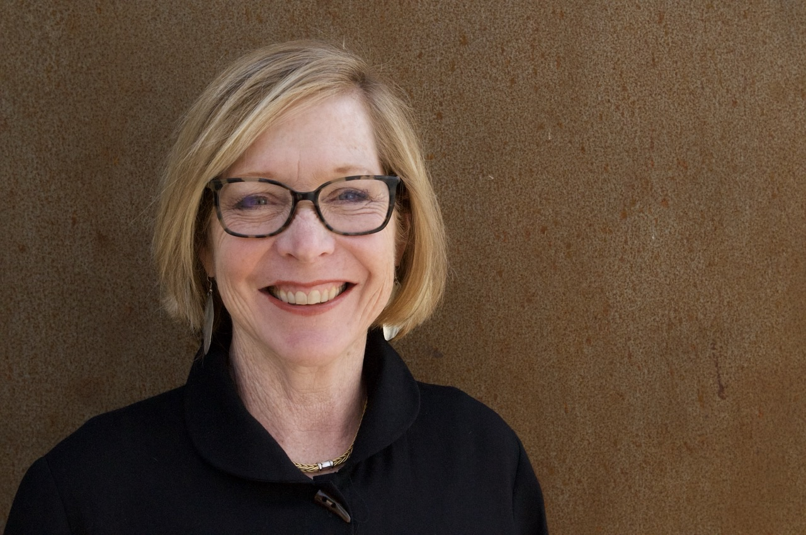

Artist Statement
I have always looked at the world as an artist. I see compositions of shapes and colors all around me and am compelled to create.
Over twenty years ago, the idea of learning to work in metal was planted by work seen in a gallery in Santa Fe, New Mexico. Years later I had the opportunity to take a continuing-education class at the local community college — and found my medium.
Metal is hard yet malleable, exacting while forgiving. It is labor intensive and heavy, but there is an appeal that continues to fascinate. I love that I can express myself artistically and also solve a practical problem, often with an unexpected aesthetic inclusion.
I cut and bend, hammer and weld steel into abstracted representative forms. I enjoy composing in three dimensions, working to move the viewer around and within the positive and negative shapes. A design element exists as a solid form, and it exists again as the volume of space between two forms; I strive to compose these so that a dialog and a tension is created — enticing, even compelling, the viewer to move around the sculpture, following the lines of the form and enjoying the contrasts of tone and texture along the way.
I want the aesthetics of my work to be visually and emotionally pleasing, and to leave enough room for interpretation that each viewer can respond individually to a piece. Ideally, what one sees can change with each visit, so that the work remains fresh over time.
About
Alisa Formway Roe is a Pacific Northwest sculptor working in welded mild, corten, and stainless steels, as well as bronze. She received her Bachelor of Arts in Art History from the University of Washington in 1979. In 2005, after many years raising a family, she returned to her artistic orientation, taking sculpture and welding classes at Portland Community College, and soon opened a studio of her own.
Her work ranges from intimate bronze figures and functional commissions — railings, gates, firepits, and lamps — to large-scale outdoor installations. Her sculpture has been exhibited in Oregon, Washington, and Illinois, and is held in the public collections of the City of Lake Oswego and Portland Community College's Rock Creek campus, as well as the private collections of individuals.